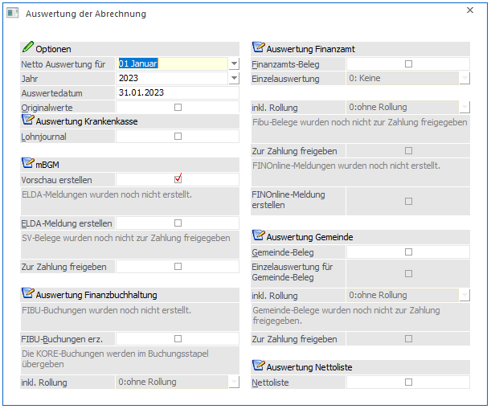
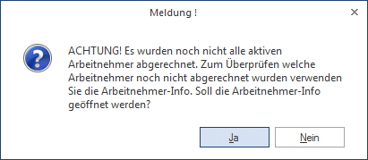
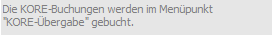
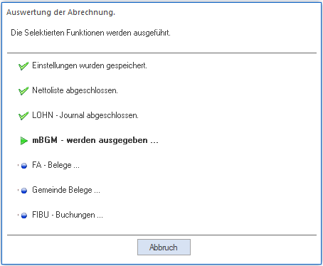

Die Monatsauswertung erfolgt im Programmpunkt
1 Abschluss
1 Auswertung der Abrechnung
oder Schnellaufruf
1 SRTG + W

Hinweis:
Nach Anwahl des Menüpunktes erfolgt eine Prüfung, ob für alle aktiven AN eine Abrechnung vorhanden ist (ausgenommen davon sind AN, die zwar aktiv sind, aber erst in einer Folgeperiode eintreten). Ist das nicht der Fall, wird eine entsprechende Meldung ausgegeben.

Durch Anklicken des JA-Buttons wird die AN-Info geöffnet, in der dann ersichtlich ist, welche AN noch nicht abgerechnet wurden. Aus der AN-Info heraus könnten die fehlenden AN gleich abgerechnet werden. Durch Anklicken des NEIN-Buttons wird der angewählte Menüpunkt geöffnet und die Auswertung der Abrechnung kann durchgeführt werden.
Ø Netto Auswertung für:
Aus den beiden Auswahllistboxen kann das Monat und das Jahr ausgewählt werden, für das die Auswertung der Abrechnung durchgeführt werden soll. Standardmäßig wird die aktuelle Abrechnungsperiode vorgeschlagen. In der Auswahllistbox "Jahr" werden nur die Jahreszahlen angezeigt, für die es Abrechnungen gibt. Das Gleiche gilt auch für das Monat. Ggf. ist darauf zu achten, dass zuerst die Jahreszahl geändert werden muss, bevor das gewünschte Auswertemonat eingetragen werden kann (z.B. soll im Juli 2001 eine Auswertung für Dezember 2000 gemacht werden - es muss zuerst auf das Jahr 2000 gestellt werden, damit danach das Monat 12, das im aktuellen Jahr noch nicht abgerechnet wurde, ausgewählt werden kann).
Ø Auswertedatum
In diesem Feld wird das Datum vorgeschlagen, mit dem in das Programm eingestiegen wurde. Das Datum wird für alle Auswertungen (auch für die FIBU-Übergabe) verwendet.
Ø Originalwerte
Diese Checkbox kann nur dann aktiviert werden, wenn es sich bei der auszuwertenden Periode nicht um die aktuelle Periode handelt. Wird diese Checkbox aktiviert, so werden Rollungen die nach dieser Periode durchgeführt wurden, bei der Auswertung nicht berücksichtigt.
Auswertung Krankenkassen
Ø Lohnjournal
Das Lohnjournal listet die einer Sozialversicherung zugeordneten Arbeitnehmer in alphanumerisch aufsteigender Reihenfolge. Pro Arbeitnehmer werden die Pflichtigkeiten und die der Pflichtigkeit unterliegenden Beträge angeführt. Die Auswertung wird nach Krankenkassen sortiert gedruckt
Am Ende der Liste wird eine Summe pro Tarifgruppe (mit Unterscheidung Normalzahlung und Sonderzahlung) ausgewiesen.
mBGM
Ø Vorschau erstellen
Ist diese Checkbox aktiv, werden die mBGM's als Vorschau aufbereitet und können somit vor der Erstellung der ELDA Datei vorab kontrolliert werden und ggf. können noch Änderungen vorgenommen werden, die bei erneuter Erstellung der mBGM's noch berücksichtigt werden können, ohne eine Stornomeldung erforderlich zu machen.
Ø ELDA-Meldung erstellen
Ist diese Checkbox aktiv, werden die mBGM's aufbereitet (zB. wird die Referenznummer fix in die Meldung zurückgeschrieben), die dann in weiterer Folge an die ELDA übermittelt werden können. Die Ausgabe der Daten selbst erfolgt über den Menüpunkt "Formulare/Ausgabe elek. Meldungen f. ELDA".
Oberhalb der Checkbox wird angezeigt, ob die ELDA-Meldungen bereits erstellt wurden oder nicht.
Wenn die ELDA-Meldungen erzeugt wurden, wird das Erstellungsdatum und das Auswertedatum, mit dem die Meldungen erstellt wurden, angezeigt. Somit ist immer ersichtlich, ob bzw. wann die Meldungen erstellt wurden.
Ø Zur Zahlung freigeben
Wird diese Checkbox aktiviert, dann wird ein entsprechender Zahlungsdatensatz erzeugt, der dann in weiterer Folge über den Menüpunkt Abschluss/Auszahlung in eine elektronische Überweisung umgewandelt werden kann. Details dazu entnehmen Sie bitte dem Kapitel Auszahlung.
Voraussetzung dafür ist, dass in den Betriebsdaten ein Empfängerstamm für die Krankenkasse hinterlegt wurde.
Oberhalb der Checkbox wird angezeigt, ob bzw. wann die SV-Belege zur Zahlung freigegeben wurden.
Auswertung Finanzbuchhaltung
Ø FIBU-Buchungen erz.
Ist diese Checkbox aktiviert, werden alle Werte lt. den Kontierungen der Lohngruppen zusammengefasst und in Stapel gestellt (Stapel -101 bis -112 - -101 steht für Jänner, -112 steht für Dezember).
Oberhalb der Checkbox wird angezeigt, ob die Buchungen bereits erstellt wurden oder nicht.
Wenn die Buchungen schon erzeugt wurden, wird das Erstellungsdatum und das Auswertedatum, mit dem die Buchungen erstellt wurden, angezeigt. Somit ist immer ersichtlich, ob bzw. wann die Buchungen erstellt wurden. Auch wenn die Buchungen bereits erstellt wurden, kann dies jederzeit wiederholt werden. Dabei ist dann allerdings darauf zu achten, dass die Buchungen nicht doppelt gebucht werden, denn die Buchungen werden im Stapel immer angehängt.
Unterhalb der Checkbox wird angezeigt, wie die KORE-Buchungen gebucht werden. Dabei gibt es zwei Möglichkeiten.
ü

direkte ÜbergabeIn diesem Fall werden die KORE-Buchungen über den eigenen Menüpunkt
1 Abschluss
1 Kore Buchungen
direkt in die WinLine KORE übergeben.
ü Übergabe mit Buchungsstapel
In diesem Fall werden die KORE-Buchungen gemeinsam mit dem Buchungsstapel erstellt und auch gemeinsam mit den FIBU-Buchungen gebucht. Der eigene Menüpunkt steht dann auch nicht zur Verfügung.
Auf welche Art die Buchung durchgeführt werden soll, wird über die LOHN-Parameter, Bereich Kore/Pfändungseinstellungen (Programm WinLine START, Menüpunkt Parameter / Applikations-Parameter) gesteuert.
Hinweis:
Wenn die KORE-Buchungen gemeinsam mit dem Buchungsstapel übergeben werden, dann werden die Kosten (SV DG) für geringfügig Beschäftigte, die bei der direkten Kostenrechnungsübergabe immer monatlich gebucht werden, so gebucht, wie es in den Betriebsdaten eingestellt ist.
Achtung:
Für die Erstellung der Buchungsstapel wird das Auswertedatum verwendet. Es ist daher darauf zu achten, dass das Auswertedatum in der Auswerteperiode liegt (kann manuell verändert werden) - sonst kann es vorkommen, dass die Buchungen in einer anderen Periode landen. Weiters ist darauf zu achten, dass die erzeugten Buchungsstapel in den Mandanten gestellt werden, der in den Betriebsdaten hinterlegt wurde.
Sind die hier eingetragenen Konten (Soll- und/oder Haben-Konto) in der WinLine FIBU als Konto mit Sachkonten-OP-Verwaltung angelegt, werden im Zuge der Buchung auch die entsprechenden Sachkonten-OP erzeugt. Wenn beide Konten mit Sachkonten-OP angelegt sind, wird keine Sachkonten-OP erstellt.
Diese Stapel können entweder in der WinLine FIBU aufgerufen und editiert werden, oder aber sie können im WinLine LOHN direkt gebucht werden (siehe auch Kapitel Buchen (LOHN-Stapel)).
Hinweis:
Wenn die Konten, die bei den Lohngruppen für die Buchungsübergabe hinterlegt sind, mit Steuercodes angelegt sind, dann wird die Steuer aus den Summen der Beträge heraus gerechnet und auch entsprechend verbucht. Wenn beide Konten mit Steuer angelegt sind, wird - wie aus der WinLine FIBU gewohnt - keine Steuer gebucht.
Ø inkl. Rollung
Mit dieser Auswahllistbox kann definiert werden, ob auch die Werte, die durch eine eventl. Rollung entstanden sind, mit ausgewertet (auch für Rollungen, die ggf. für das Vorjahr durchgeführt wurden) werden sollen. Man kann zwischen den folgenden Optionen wählen:
ü ohne Rollung
Rollungen werden
nicht berücksichtigt
ü inkl. Rollung/kumuliert
Mit
dieser Option werden alle SV-Änderungen in den aktuellen SV-Beleg mit
eingerechnet.
ü inkl. Rollung/einzeln
Mit
dieser Option wird für jedes Monat, in dem eine Rollung durchgeführt wurde und
wo sich die SV-relevanten Daten geändert haben, ein eigener Korrektur-Beleg
ausgegeben, der die Differenzen zum ursprünglichen SV-Beleg des Monats enthält.
Zusätzlich dazu wird auch eine Berichtigungs-Meldung für die ELDA-Übermittlung
erstellt.
Auswertung Finanzamt
Ø Finanzamts-Beleg
Der FIBU-Beleg enthält die Buchungsgrundlagen für die Übergabe der Daten der Lohnabrechnung an die Buchhaltung.
Er besteht aus folgenden Informationen:
ü Bruttogehälter
ü Nettoauszahlungssummen
ü Beträge nach Lohngruppen gesplittet
ü Verpflichtungen gegenüber der Sozialversicherung
ü Verpflichtungen gegenüber dem Finanzamt
ü Verpflichtungen gegenüber der Stadtkasse
ü Kontierungen aller angeführten Positionen (sofern diese in den Lohngruppen definiert wurden).
Der FIBU-Beleg wird zuerst als Summenbeleg ausgedruckt d.h. als kumulierter Beleg über alle Abrechnungen der Abrechnungsperiode. Der Gesamt-Beleg des Mandanten trägt die Finanzamts-Anschrift und den Firmen-Namen des Hauptbetriebes (also dem Betrieb in den Betriebsdaten, der als Hauptbetrieb gekennzeichnet wurde).
Ø Einzelauswertung
Hier kann entschieden werden, ob für weitere Auswertungen detaillierte FIBU-Belege des Mandanten benötigt werden. Dabei gibt es zwei Möglichkeiten, die entsprechend aus der Auswahllistbox ausgewählt werden können:
1.) Einzelauswertung pro Finanzamt
Voraussetzung
Für die Zuweisung eines Arbeitnehmers zu einem FIBU-Beleg ist die Eintragung der FA-Nummer im Arbeitnehmerstamm notwendig. Die Reihenfolge des Ausdruckes der FIBU-Belege ist durch die Ordnungszahl des Finanzamtes im Firmenstamm vorgegeben.
Der FIBU-Beleg wird nach Finanzämtern getrennt ausgedruckt, wenn im Arbeitnehmerstamm unterschiedliche Finanzamt-Nummern eingetragen wurden.
Kostenstellen-Auswertung
Der FIBU-Beleg bzw. die Zuteilung von Arbeitnehmern zu einem individuellen FIBU-Beleg kann auch für einfache Kostenstellen-Auswertungen genutzt werden.
Voraussetzung
Jeder Arbeitnehmer kann fix einer Kostenstelle zugeordnet werden.
In diesem Fall wird zusätzlich zum "generellen" Buchungsbeleg, der über alle Kostenstellen summiert, auch ein FIBU-Beleg für jede Kostenstelle gedruckt.
2.) Einzelauswertung pro Kontierung
Voraussetzung
Für die Zuweisung eines Arbeitnehmers zu einem Kontierungs-Beleg ist die Eintragung der entsprechenden Kontierung im Arbeitnehmerstamm notwendig. Die Reihenfolge des Ausdruckes der FIBU-Belege ist durch die Namen der Kontierungsvarianten vorgegeben. Kontierungen können über die Lohngruppentexte angelegt werden. Das Kontierungsschema wird auch pro FIBU-Beleg entsprechend ausgewiesen.
Achtung:
Wenn der FIBU-Einzelbelg pro Finanzamt ausgedruckt wird, dann werden die für die Buchung verwendeten Konten vom "STANDARD"-Kontierungsschema verwendet. Nur wenn der FIBU-Einzelbeleg nach Kontierung ausgegeben wird, werden die jeweiligen für die Buchungen hinterlegten Konten des Kontierungsschemas angedruckt.
Ø inkl. Rollung
Mit dieser Auswahllistbox kann definiert werden, ob auch die Werte, die durch eine eventl. Rollung entstanden sind, mit ausgewertet (auch für Rollungen, die ggf. für das Vorjahr durchgeführt wurden) werden sollen. Man kann zwischen den folgenden Optionen wählen:
ü ohne Rollung
Rollungen werden
nicht berücksichtigt
ü inkl. Rollung/kumuliert
Mit
dieser Option werden alle SV-Änderungen in den aktuellen SV-Beleg mit
eingerechnet.
ü inkl. Rollung/einzeln
Mit
dieser Option wird für jedes Monat, in dem eine Rollung durchgeführt wurde und
wo sich die SV-relevanten Daten geändert haben, ein eigener Korrektur-Beleg
ausgegeben, der die Differenzen zum ursprünglichen SV-Beleg des Monats enthält.
Zusätzlich dazu wird auch eine Berichtigungs-Meldung für die ELDA-Übermittlung
erstellt.
Ø Zur Zahlung freigeben
Wird diese Checkbox aktiviert, dann wird ein entsprechender Zahlungsdatensatz erzeugt, der dann in weiterer Folge über den Menüpunkt Abschluss/Auszahlung in eine elektronische Überweisung umgewandelt werden kann. Details dazu entnehmen Sie bitte dem Kapitel Auszahlung.
Voraussetzung dafür ist, dass in den Betriebsdaten ein Empfängerstamm für das Finanzamt hinterlegt wurde.
Oberhalb der Checkbox wird angezeigt, ob bzw. wann die FIBU-Belege zur Zahlung freigegeben wurden.
Ø FINOnline-Meldung erstellen
Wird diese Checkbox aktiviert, dann werden die Werte für das Finanzamt (LST, DB und DZ) so bereitgestellt, das sie in weiterer Folge mit dem Programmteil "Selbstbemessungsabgaben" bearbeitet und in weiterer Folge über FinanzOnline übermittelt werden können.
Oberhalb der Checkbox wird angezeigt, ob bzw. wann die Meldung zur FinanzOnline bereits erstellt wurde.
Auswertung Gemeinde
Ø Gemeinde-Beleg
Der Gemeindebeleg enthält die Daten für die Abgaben an die Gemeinde. Das sind
ü die Kommunalsteuer
ü und ggf. die DG-Abgaben (U-Bahn-Steuer).
Der Gemeinde-Beleg wird zuerst als Summenbeleg ausgedruckt d.h. als kumulierter Beleg über alle Abrechnungen der Abrechnungsperiode. Am Gesamt-Beleg des Mandanten der Firmen-Namen und die Anschrift des Hauptbetriebes (also dem Betrieb in den Betriebsdaten, der als Hauptbetrieb gekennzeichnet wurde) angezeigt.
Ø Einzelauswertung für Gemeinde-Beleg
Hier kann entschieden werden, ob für weitere Auswertungen detaillierte Gemeinde-Belege für alle Gemeinden des Mandanten benötigt bzw. ausgedruckt werden.
Voraussetzung
Für die Zuweisung eines Arbeitnehmers zu einem Gemeinde-Beleg ist die Eintragung der Gemeindenummer im Arbeitnehmerstamm notwendig (Register Lst). Die Reihenfolge des Ausdruckes der Gemeinde-Belege ist durch die Ordnungszahl der Gemeinde im Firmenstamm vorgegeben.
Der Gemeinde-Beleg wird nach Gemeinden getrennt ausgedruckt, wenn im Arbeitnehmerstamm unterschiedliche Gemeindenummern eingetragen wurden.
Ø inkl. Rollung
Mit dieser Auswahllistbox kann definiert werden, ob auch die Werte, die durch eine eventl. Rollung entstanden sind, mit ausgewertet (auch für Rollungen, die ggf. für das Vorjahr durchgeführt wurden) werden sollen. Man kann zwischen den folgenden Optionen wählen:
ü ohne Rollung
Rollungen werden
nicht berücksichtigt
ü inkl. Rollung/kumuliert
Mit
dieser Option werden alle SV-Änderungen in den aktuellen SV-Beleg mit
eingerechnet.
ü inkl. Rollung/einzeln
Mit
dieser Option wird für jedes Monat, in dem eine Rollung durchgeführt wurde und
wo sich die SV-relevanten Daten geändert haben, ein eigener Korrektur-Beleg
ausgegeben, der die Differenzen zum ursprünglichen SV-Beleg des Monats enthält.
Zusätzlich dazu wird auch eine Berichtigungs-Meldung für die ELDA-Übermittlung
erstellt.
Ø Zur Zahlung freigeben
Wird diese Checkbox aktiviert, dann wird ein entsprechender Zahlungsdatensatz erzeugt, der dann in weiterer Folge über den Menüpunkt Abschluss/Auszahlung in eine elektronische Überweisung umgewandelt werden kann. Details dazu entnehmen Sie bitte dem Kapitel Auszahlung.
Voraussetzung dafür ist, dass in den Betriebsdaten ein Empfängerstamm für die Gemeinde hinterlegt wurde.
Hinweis:
Wenn in den Betriebsdaten die Option "DG-Abgabe (U-Bahn)" aktiviert ist und zusätzlich auch noch ein "DG-Abgabe - Empfänger" hinterlegt wurde, dann werden für die Gemeinde 2 Zahlungen erstellt - einmal für die KommSt. und einmal für die DG-Abgabe.
Oberhalb der Checkbox wird angezeigt, ob bzw. wann die Gemeindebelege zur Zahlung freigegeben wurden.
Auswertung Nettoliste
Ø Nettoliste
In der Nettoliste werden alle Arbeitnehmer mit ihren Nettobezügen ausgewiesen. Ist im AN-Stamm eine Bankverbindung eingetragen, wird diese auch entsprechend angezeigt.
Hinweis:
Eine detaillierte Aufstellung der Auszahlungsbeträge (z.B. Münzliste) erhalten Sie über den Menüpunkt "Abschluss/Auszahlung"
Die Auswertung wird durch Drücken der F5-Taste gestartet. Damit wird ein Fenster geöffnet, das den aktuellen Status der Ausgabe anzeigt.

Wenn alle ausgewählten Auswertungen durchgeführt werden, werden die Fenster geschlossen. Die vorgenommenen Einstellungen werden gespeichert und beim nächsten Aufruf wieder vorgeschlagen (mit Ausnahme des Auswertedatum und der Auswerteperiode).
Hinweis zum Ausdruck:
Beim Ausdruck der Auswertung wird immer die Art der Auswertung im Kopfbereich mit angedruckt. Anhand dieser Information ist dann ersichtlich, wann und mit welchen Einstellungen die Auswertung gedruckt wurde.
Beispiele für den Andruck:
ü Aktuelle Periode
Der Ausdruck
für die Auswerteperiode wurde in der aktuellen Periode durchgeführt.
ü Ausgewertet in Periode
XX/YYYY
Der Ausdruck für eine bereits abgeschlossenen Periode wurde in der
Periode (XX) im Jahr (YYYY) durchgeführt.
Wenn es sich um Auswertungen des FIBU-Beleges oder des Gemeinde-Beleges handelt, können auch noch zusätzliche Informationen mit angedruckt werden:
ü inkl. Rollung / einzeln
Die
Auswertung wurde mit der Option "inkl. Rollung" und "einzeln" durchgeführt.
ü inkl. Rollung / kumuliert
Die
Auswertung wurde mit der Option "inkl. Rollung" und "Kumuliert"
durchgeführt.